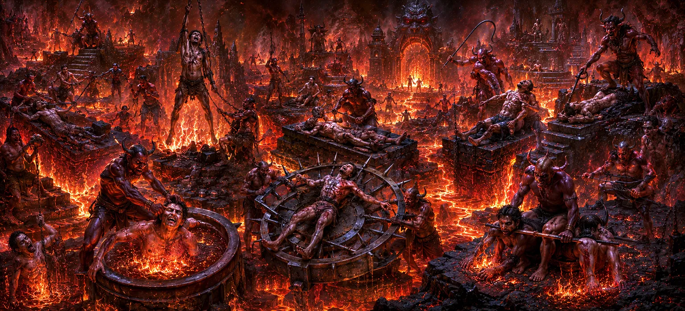

नरक की पीड़ा
अध्याय 8 (नर्क के क्षेत्र) में वर्णित अट्ठाईस मुख्य नारकीय क्षेत्रों के स्थानिक लेआउट और वर्गीकरण पर निर्माण, अध्याय 9 भौगोलिक मानचित्रण से सक्रिय अनुभव तक परिवर्तन। यह उन भूमिगत क्षेत्रों के भीतर जीव (आत्माओं) द्वारा सहे गए नरक के विशिष्ट कष्टों को रेखांकित करता है।
पौराणिक समझ में, नरका में पीड़ा का अनुभव एक विशेष रूप से कॉन्फ़िगर किए गए वाहन के माध्यम से किया जाता है जिसे कहा जाता है यतना शरीरा (पीड़ा का शरीर). यह लचीला, सूक्ष्म शरीर विनाश के बिना तीव्र संवेदना को सक्षम बनाता है, जिससे नकारात्मक कर्म संबंधी प्रभावों को गणितीय सटीकता के साथ जला दिया जाता है।
नरक की पीड़ाओं को समझकर, साधक क्रिया और प्रतिक्रिया के बीच पूर्ण समानता को समझता है, यह पहचानता है कि पीड़ा का हर रूप शुद्धिकरण के लिए अपने मूल में लौटने वाले एक अधर्मी कार्य का एक सटीक दर्पण है।
अध्याय 9 की मुख्य बातें
यतना शरीरा
बिना मरे तीव्र अनुभूति को सहने के लिए विशेष रूप से तैयार किए गए लचीले सूक्ष्म रूप का विवरण।
तापीय एवं आग्नेय पीड़ाएँ
उबलते तेल, चमकती रेत और कुंभीपाका जैसे उग्र जहाजों में विसर्जन का अन्वेषण करता है।
शारीरिक एवं पर्यावरणीय कष्ट
असिपत्रवन के उस्तरेदार पत्ते, कांटेदार वृक्षों और यांत्रिक कुचलन का वर्णन करता है।
संवेदी अभाव एवं शून्यता
तमिस्रा और अंधतामिस्र में पूर्ण अंधेरे, दमघोंटू कुओं और पूर्ण अलगाव की जांच की गई।
कर्म तुल्यता
यह प्रदर्शित करता है कि कैसे प्रत्येक प्रकार की पीड़ा सीधे तौर पर एक विशिष्ट नैतिक अपराध से मेल खाती है।
निरंतर दुखों का पुल
अध्याय 10 की 'नरक की पीड़ा' की विस्तृत निरंतरता का मार्ग प्रशस्त करता है।
इस अध्याय में मुख्य विषय
- 01 यतना शरीरा की प्रकृति और गठन →
- 02 तापीय पीड़ाएँ: आग, उबलती कड़ाही और धातु की प्लेटें →
- 03 घाव करने वाले और छेदने वाले कष्ट: असिपत्रवन और वज्रकंटक →
- 04 विसर्जन, घुटन और अंधेरे की पीड़ा →
- 05 यांत्रिक दबाव, कुचलन और संपीड़न →
- 06 प्राणियों, परजीवियों और जानवरों से जुड़ी पीड़ाएँ →
- 07 मनोवैज्ञानिक पीड़ा: स्मृति, पछतावा और असहायता →
- 08 नारकीय प्रतिशोध में आनुपातिकता का नियम →
- 09 नीदरलैंड की पीड़ा का रेचक और पुनर्स्थापनात्मक कार्य →
- 10 अध्याय 10 की ओर : नरक की पीड़ाएँ (भाग 2) →
यतना शरीरा की प्रकृति और गठन
अध्याय 9 यह समझाने से शुरू होता है कि नरक की पीड़ाओं का अनुभव कैसे किया जाता है। मृत्यु के समय छोड़ा गया घना भौतिक शरीर पाताल लोक में प्रवेश नहीं कर सकता; इसके बजाय, आत्मा में निवेश किया जाता है यतना शरीरा.
यह विशेष पात्र सूक्ष्म तत्वों से निर्मित है जिनमें उन्नत संवेदी ग्रहणशीलता होती है। भौतिक शरीर के विपरीत, यह अत्यधिक शारीरिक आघात के तहत नष्ट नहीं होता है, ख़त्म नहीं होता है, या नष्ट नहीं होता है।
क्योंकि शरीर तुरंत पुनर्जीवित हो जाता है, आत्मा तब तक निरंतर शुद्धिकरण अनुभव सहन करती है जब तक कि उसके नकारात्मक कर्म की गति पूरी तरह समाप्त नहीं हो जाती।
तापीय पीड़ाएँ: आग, उबलती कड़ाही और धातु की प्लेटें
अध्याय 9 में वर्णित पीड़ा की प्रमुख श्रेणियों में से एक में अत्यधिक तापीय तीव्रता शामिल है।
जो आत्माएं तीव्र घृणा, वासना या लालच के साथ काम करती हैं, उन्हें उबलते तेल के कड़ाहों (कुंभिपक) में डुबोया जाता है या लाल-गर्म लोहे के स्तंभों (तप्तसुर्मी) को गले लगाने के लिए मजबूर किया जाता है।
उग्र तत्व एक शक्तिशाली शुद्धिकरण एजेंट के रूप में कार्य करता है, घनी अहंकारी इच्छाओं को जलाता है और आंतरिक जुनून को पूर्ण समाधान पर लाता है।
घाव करने वाले और छेदने वाले कष्ट: असिपत्रवन और वज्रकंटक
पीड़ा के दूसरे रूप में परिदृश्य के भीतर ही रेज़र-तेज काटने और छेदने की व्यवस्था अंतर्निहित है।
असिपत्रवन में, तेज धार वाले पत्ते सूक्ष्म रूप को काटते हुए लगातार गिरते रहते हैं, जबकि वज्रकंटक-सलमाली में, आत्माओं को तेज लोहे के कांटों से लदे पेड़ों के पार खींचा जाता है।
ये घाव देने वाले अनुभव कठोर शब्दों, विश्वासघात और नश्वर जीवन में निर्दोष प्राणियों को जानबूझकर पहुंचाई गई भावनात्मक या शारीरिक चोट से मेल खाते हैं।
विसर्जन, घुटन और अंधेरे की पीड़ा
अध्याय 9 संवेदी अंधेरे, घुटन और गंदे वातावरण द्वारा विशेषता गैर-थर्मल पीड़ाओं का भी वर्णन करता है।
छल, पाखंड, या अशुद्ध लाभ पर जीने की दोषी आत्माओं को मवाद, रक्त और गंदगी (पुयोदा और रक्ताहोभोज) की नदियों में डुबो दिया जाता है, या गहरे काले गड्ढों (अंधकूप) में डाल दिया जाता है।
दमघोंटू वातावरण चेतना को अपने ही छुपे पाखंडों और अनैतिक विकल्पों की बेईमानी से जूझने पर मजबूर कर देता है।
यांत्रिक दबाव, कुचलन और संपीड़न
पीड़ा के कुछ प्रकार अत्यधिक शारीरिक दबाव का उपयोग करते हैं, जहां आत्माओं को बड़े पत्थर या धातु संरचनाओं के बीच दबाया, कुचला या जकड़ दिया जाता है।
सुकरमुखा और संदामसा में, भारी यांत्रिक बुराइयाँ यतना शरीरा को निचोड़ती हैं, जो उस दमनकारी निचोड़ को दर्शाती है जो लालची या अत्याचारी व्यक्ति दूसरों पर डालते हैं।
यह तीव्र संपीड़न गर्व, अहंकार और साथी प्राणियों पर हावी होने की भावना की भावना को शुद्ध करता है।
प्राणियों, परजीवियों और जानवरों से जुड़ी पीड़ाएँ
अध्याय 9 उन पीड़ाओं का वर्णन करता है जहां जीवित एजेंट - जैसे मांस खाने वाले कीड़े, जहरीले सांप और क्रूर शिकारी - प्रतिशोध के साधन के रूप में कार्य करते हैं।
कृमिभोजन और सरमेयादान जैसे क्षेत्रों में, आत्माओं को इन संस्थाओं द्वारा लगातार काटा, कुचला या पीड़ा दी जाती है, वे उस असहायता का अनुभव करते हैं जो उन्होंने एक बार रक्षाहीन प्राणियों को दी थी।
यह अंतःक्रिया अपराधी को शिकार होने के दर्द का एहसास कराकर सभी जीवन रूपों के प्रति श्रद्धा को फिर से स्थापित करती है।
मनोवैज्ञानिक पीड़ा: स्मृति, पछतावा और असहायता
शारीरिक जैसी संवेदनाओं से परे, अध्याय 9 उस गहरी मनोवैज्ञानिक पीड़ा पर जोर देता है जो सभी नारकीय अनुभवों के साथ होती है।
आत्माएं अपने सांसारिक अवसरों, पिछले विशेषाधिकारों और आध्यात्मिक क्षमता के बर्बाद हुए क्षणों की ज्वलंत यादें बनाए रखती हैं, जिससे अत्यधिक अफसोस और पश्चाताप होता है।
यह आंतरिक मानसिक पीड़ा कठोर आत्म-औचित्य को तोड़ने और नैतिक स्पष्टता को जागृत करने के लिए बाहरी वातावरण के साथ मिलकर काम करती है।
नारकीय प्रतिशोध में आनुपातिकता का नियम
अध्याय 9 की एक मौलिक शिक्षा यह है कि नरक में प्रत्येक पीड़ा को सख्ती से मापा जाता है और किए गए सटीक कर्म के अनुपात में होता है।
कोई यादृच्छिक, आकस्मिक, या अनुचित दंड नहीं हैं; पीड़ा की प्रकृति, अवधि और तीव्रता पूरी तरह से ब्रह्मांडीय कानून (आरटीए) द्वारा निर्धारित होती है।
यह गणितीय परिशुद्धता गारंटी देती है कि दैवीय न्याय अटल है, व्यक्तिगत पूर्वाग्रह या मनमाने क्रोध से पूरी तरह मुक्त है।
नीदरलैंड की पीड़ा का रेचक और पुनर्स्थापनात्मक कार्य
स्थायी निंदा का स्थान होने से दूर, नरक की पीड़ाएँ एक आवश्यक पुनर्स्थापनात्मक उद्देश्य की पूर्ति करती हैं।
इन तीव्र संवेदनाओं को सहन करके, आत्मा अपने सबसे भारी अपूर्ण कर्म ऋणों को समाप्त कर देती है, सूक्ष्म शरीर को विषाक्त छापों (संस्कारों) से मुक्त कर देती है।
एक बार साफ हो जाने पर, आत्मा को एक ताज़ा, विनम्र और शुद्ध सूक्ष्म संविधान के साथ नए जीवन रूपों में प्रवेश करने के लिए पाताल लोक से मुक्त कर दिया जाता है।
अध्याय 10 की ओर : नरक की पीड़ाएँ
निचली पीड़ाओं में शामिल प्राथमिक तौर-तरीकों, तंत्रों और शारीरिक संरचनाओं को स्थापित करने के बाद, अध्याय 9 अपना मूलभूत विवरण समाप्त करता है।
पाठ अब आरंभिक विवरणों से हटकर नारकीय स्तरों में अस्तित्व संबंधी पीड़ा की व्यापक जांच की ओर स्थानांतरित हो गया है।
यह निर्बाध रूप से अध्याय 10, **नरक की पीड़ा** की ओर ले जाता है, जो भूमिगत प्रतिशोध की दार्शनिक, मनोवैज्ञानिक और कार्मिक वास्तविकताओं में गहराई से उतरता है।
अध्याय 9 की मुख्य शिक्षाएँ
सूक्ष्म ग्रहणशीलता
यतना शरीरा यह सुनिश्चित करता है कि चेतना अपने कार्यों के प्रभाव से बच नहीं सकती या सुन्न नहीं हो सकती।
परफेक्ट मिररिंग
पीड़ा का प्रत्येक रूप सीधे तौर पर दूसरों को पहुंचाई गई हानि की प्रकृति को दर्शाता है।
कर्म शुद्धि
दुख एक तीव्र पवित्र अग्नि है जो सघन मानसिक अशुद्धियों को जला देती है।
पछतावे का जागरण
मनोवैज्ञानिक स्मृति सच्चे आंतरिक पश्चाताप को प्रेरित करती है, कठोर अहंकार को तोड़ती है।
पूर्ण संतुलन
नीचे दिए गए दंड गणितीय निष्पक्षता के साथ लौकिक संतुलन बनाए रखते हैं।
शरण के रूप में भक्ति
भगवान शिव का स्मरण नकारात्मक संस्कारों को नष्ट कर आत्मा को नरक से बचाता है।
आध्यात्मिक चिंतन
अध्याय 9 से पता चलता है कि निचली दुनिया में पीड़ा प्रतिशोध के लिए नहीं, बल्कि गहन पुनर्संरेखण के लिए बनाई गई है। यतना शरीरा और मौलिक, शारीरिक और मानसिक पीड़ा के सटीक रूप अहंकारी अशुद्धियों को पिघलाने के लिए एक आवश्यक भट्टी के रूप में काम करते हैं जिन्हें हल्के तरीकों से भंग नहीं किया जा सकता है। नरक की पीड़ाओं को समझने से कर्म के नियम (कारण और प्रभाव) के प्रति गहरी श्रद्धा जागृत होती है। अपने मन को धर्म, करुणा और महादेव की भक्ति में स्थापित करके, हम अंडरवर्ल्ड की गंभीर शुद्धि के बजाय सचेतन साधना के माध्यम से इस जीवन में अपने नकारात्मक प्रभावों को जला देते हैं।
अध्याय 9 का संदेश जीना
प्रतिदिन आत्म-निरीक्षण और नैतिक अनुशासन का अभ्यास करके अध्याय 9 के संदेश को शामिल करें। धोखे, क्रूरता या शोषण की आदतों को सक्रिय रूप से समाप्त करें, इससे पहले कि वे कर्म ऋण में बदल जाएँ।
दान के कार्यों में संलग्न रहें, तपस्या (तप) का अभ्यास करें, और शिव के पवित्र नाम की शरण लें, अपने जीवन को स्वैच्छिक शुद्धि और दिव्य अनुग्रह के मार्ग में परिवर्तित करें।
प्रमुख आध्यात्मिक अवधारणाएँ
विशेषीकृत सूक्ष्म शरीर बिना नष्ट हुए गहन कर्म अनुभव को सहन करने के लिए सुसज्जित है।
लाल-गर्म धातु संरचनाओं के साथ अनिवार्य संपर्क से जुड़ी नारकीय सजा।
कांटेदार वृक्ष क्षेत्र जहां आत्माओं को उस्तरे जैसे लोहे के कांटों से घायल किया जाता है।
वह क्षेत्र जहां आत्माएं मांस खाने वाले परजीवियों के लगातार काटने का शिकार होती हैं।
गहरे काले गड्ढे वाले क्षेत्र की विशेषता दमघोंटू अलगाव और संवेदी अंधकार है।
गहन अनुभव के माध्यम से गहरे अवचेतन कर्म के बीजों को जलाने की प्रक्रिया।
अध्याय सारांश
उमा संहिता अध्याय 9 पाताल लोक में सहे गए नरक के कष्टों का सक्रिय विवरण प्रदान करता है। यह यतना शरीरा की यांत्रिकी को समझाता है - सूक्ष्म शरीर जिसे विनाश के बिना चरम अनुभव से गुजरने के लिए डिज़ाइन किया गया है - और कुंभीपाका, असिपत्रवन, अंधकुपा और संदामसा जैसे क्षेत्रों में थर्मल, काटने, दम घुटने, यांत्रिक और जैविक पीड़ाओं की रूपरेखा तैयार करता है। अध्याय इस बात पर प्रकाश डालता है कि ये दर्दनाक अनुभव सीधे तौर पर पिछले अनैतिक कार्यों को दर्शाते हैं और सख्ती से शुद्धिकरण और पुनर्स्थापनात्मक कार्य करते हैं। घने कर्म ऋणों को समाप्त करके, पीड़ा आत्मा को अंततः मुक्ति और विकासवादी चक्र में पुनः प्रवेश के लिए तैयार करती है, जो अध्याय 10 के नरक की पीड़ाओं के निरंतर अध्ययन के लिए आधार रेखा निर्धारित करती है।
अक्सर पूछे जाने वाले प्रश्न
① उमा संहिता अध्याय 9 का फोकस क्या है?
अध्याय 9 नरक की पीड़ाओं, शारीरिक और मानसिक पीड़ाओं, और नरक के विभिन्न क्षेत्रों में आत्माओं द्वारा अनुभव की जाने वाली शुद्धिकरण दंडों पर केंद्रित है।
② नरक में कौन सा शरीर इन कष्टों का अनुभव करता है?
आत्मा इन अनुभवों को यतना शरीरा (पीड़ित शरीर) के माध्यम से गुजरती है, जो एक विशेष सूक्ष्म वाहन है जो बिना नष्ट हुए तीव्र संवेदनाओं को सहन करने में सक्षम है।
③ नरक में पीड़ा शुद्धिकरण के रूप में कैसे कार्य करती है?
दर्दनाक अनुभव घने नकारात्मक कर्म प्रभावों (संस्कारों) को बेअसर करते हैं, संतुलन बहाल करते हैं और आत्मा को उसकी अपरिष्कृत प्रवृत्तियों से मुक्त करते हैं।
④ अध्याय 9 अध्याय 10 से कैसे जुड़ता है?
अध्याय 9 पीड़ा के विशिष्ट रूपों और तंत्रों का परिचय देता है, अध्याय 10, 'नरक की पीड़ा' के लिए आधार रेखा निर्धारित करता है, जो अस्तित्वगत और कर्म पीड़ा की गहन विषयगत परीक्षा प्रदान करता है।
"जो सत्य और शिव की भक्ति के माध्यम से अपने हृदय को शुद्ध करता है वह दुख के बीज को पाताल की आग तक पहुँचने से बहुत पहले ही जला देता है।"
उमा संहिता के माध्यम से जारी रखें
अध्याय 9 निचली पीड़ाओं के विशिष्ट रूपों और तंत्रों की जांच करता है। नारकीय स्तरों में पीड़ा के व्यापक संश्लेषण का पता लगाने के लिए अध्याय 10 की ओर आगे बढ़ें।